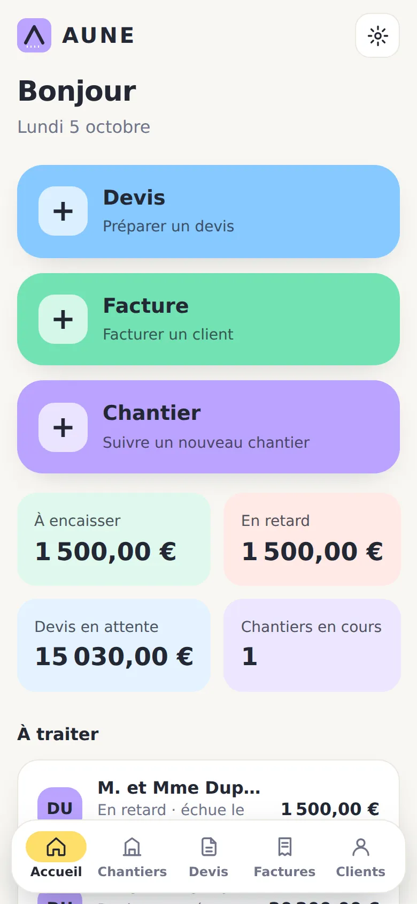
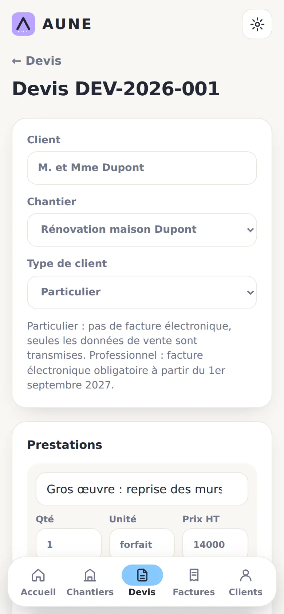
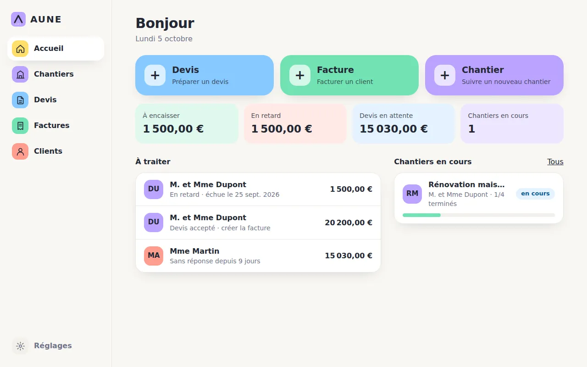

Vos devis et factures, sans prise de tête.
AUNE aide les artisans et auto-entrepreneurs à suivre leurs chantiers, faire leurs devis et leurs factures en quelques clics, sur téléphone comme sur ordinateur.
Sans carte bancaire. Rien à installer : l'appli s'ouvre dans le navigateur.


Tout ce qu'il faut, rien de trop.
Une appli rapide, pensée pour les gens qui n'ont pas le temps : peu de boutons, tout au bon endroit.
Devis et factures
En PDF propre, avec vos mentions légales, envoyés par WhatsApp, e-mail ou SMS en un geste.
Chantiers et planning
Chaque chantier regroupe ses corps de métier, ses devis et ses factures, avec un planning clair.
Clients
Le carnet se remplit tout seul. Un devis ou une facture se pré-remplit en un clic.
Acompte, avoir, relance
Facture d'acompte en un clic, avoir pour corriger une facture envoyée, relance des impayés prête à envoyer.
Facture électronique
Format Factur-X (PDF avec données intégrées), pour vos clients professionnels. Envoi à une plateforme agréée : bientôt.
Suivi du chiffre d'affaires
Encaissé par mois et par trimestre, part du plafond de la micro-entreprise, livre des recettes à exporter.
Sur tous vos appareils
Connectez-vous par un lien reçu par e-mail, sans mot de passe : vos données suivent sur téléphone et ordinateur.
Marche sans réseau
Sur un chantier sans signal, l'appli fonctionne. Tout se synchronise au retour du réseau.
Pensée pour le terrain.
Un tableau de bord qui dit tout de suite quoi faire : factures en retard, devis sans réponse, devis acceptés à facturer.
- Créez le devis sur place, en quelques lignes.
- Envoyez-le au client depuis votre téléphone.
- Quand il est accepté, transformez-le en facture en un clic.

Installez-la comme une appli.
Pas de boutique d'applications : ouvrez AUNE dans votre navigateur et ajoutez-la à l'écran d'accueil. Elle s'ouvre ensuite en plein écran, comme une appli.
iPhone
Ouvrez AUNE dans Safari, touchez le bouton Partager, puis Sur l'écran d'accueil.
Android
Ouvrez AUNE dans Chrome, touchez le menu ⋮, puis Installer l'application (ou « Ajouter à l'écran d'accueil »).
Ordinateur
Ouvrez AUNE dans Chrome ou Edge et cliquez sur l'icône d'installation à droite de la barre d'adresse.
Gratuit pour commencer. Pro quand vous en avez besoin.
Vos devis et factures restent gratuits, sans limite. Le Pro ajoute la synchronisation, la facture électronique et le suivi du chiffre d'affaires.
Gratuit
Sans compte, sur un appareil.
- Devis, factures et avoirs en PDF, sans limite
- Clients, chantiers, planning
- Acompte, relance, duplication
- Sauvegarde par export
- Synchronisation entre appareils
- Facture électronique Factur-X
- Suivi du chiffre d'affaires
Pro
ou 90 € par an (2 mois offerts)
- Tout le plan Gratuit
- Synchronisation téléphone et ordinateur
- Facture électronique Factur-X
- Suivi du chiffre d'affaires, plafond et livre des recettes
- 30 jours d'essai offerts, sans carte bancaire
- Résiliation en un clic
Prix nets : TVA non applicable, article 293 B du CGI. Paiement sécurisé par Stripe.
Questions fréquentes
Où sont mes données ?
Sur votre appareil, dans le navigateur. Si vous créez un compte, elles sont aussi synchronisées sur nos serveurs (Cloudflare) pour les retrouver sur vos autres appareils. Vous pouvez tout exporter à tout moment et supprimer votre compte en ligne depuis l'appli.
Que se passe-t-il à la fin de l'essai ou si je résilie ?
Vous repassez en plan Gratuit. Vos données ne sont jamais bloquées : elles restent sur votre appareil et exportables. Seule la synchronisation et les fonctions Pro s'arrêtent.
AUNE est-il prêt pour la facture électronique ?
AUNE produit des factures au format Factur-X (norme européenne EN 16931) pour vos clients professionnels. AUNE n'est pas une plateforme agréée : l'envoi à une plateforme agréée, obligatoire pour émettre à partir du 1er septembre 2027 pour les petites entreprises, est prévu.
Puis-je l'utiliser sans connexion internet ?
Oui. Sur un chantier sans réseau, tout fonctionne. La synchronisation se fait au retour du réseau.
AUNE remplace-t-il mon comptable ?
Non. AUNE vous aide à établir vos documents et à suivre votre activité, mais il ne remplace ni un conseil comptable, ni un conseil juridique ou fiscal. Vérifiez toujours les mentions et montants de vos documents.
Comment résilier ?
Dans l'appli : Réglages, « Gérer mon abonnement ». La résiliation est effective à la fin de la période déjà payée.
Une question, un problème ?
Écrivez-nous à [[EMAIL]].